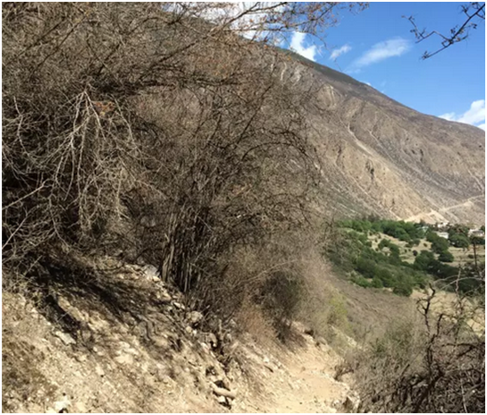
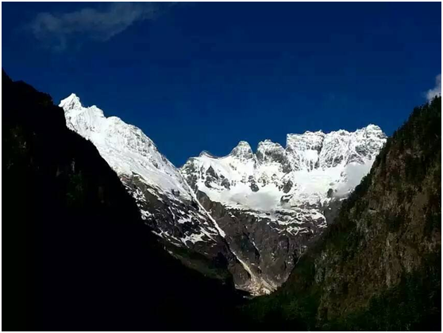
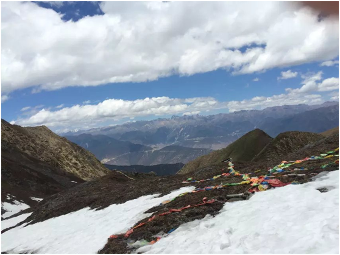
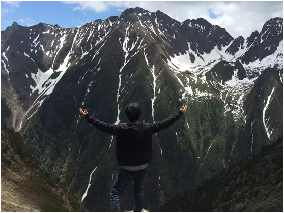

15年，我徒步50公里上了雪山，改变了对时间、生命的认知。
很多知友说改变在于眼界、朋友、经历、钱包缩水等等，这些自然是没错的。
但如果只是为了这些，在市内随便花点钱进高端会所，多参加几次交友活动就实现了。没有必要去旅行。
旅行于我而言，就是为了看这个世界不同的风景，回过头来翻翻老照片，品味自己生命曾经存在的痕迹；在忙碌之中放松自己，明白这世上除了工作、还有生活。
-----------------------
15年6月，我和几个朋友走了滇藏线，一共13天，其中徒步3天，从德钦到雨崩，再到梅里雪山山腰，山路共计50多公里。而这次长途跋涉，让我对时间和生命有了新的看法。
早晨7点从德钦出发，坐车到尼农大峡谷山脚，人们说终点（雨崩村）与世隔绝，直到1986年才被路过的直升机所发现。
我们满怀着憧憬，早早的便准备好了姨妈巾（放在脚底防磨损），榨菜，几大包水，以及一些中途补给等，顶着烈日，拄着登山杖，开始登山。
山路18公里，算不上陡峭，但也有些坡度，大概走了8个多小时，晚上6点到。
|18公里山路，路况差不多这样。等到村里的时候，我们跟一条要死的咸鱼也没什么区别了，本想着在海拔3000+，与世隔绝的村庄中，好好歇两天再做打算。但人不作便不会死，命运总喜欢跟人开各种各样的玩笑。
“时年六月，人言山顶有雪，欲登之。”他们说山顶的六月有雪，雪山就在眼前，你能不登吗？那就登吧！
第二天早晨继续6点半起床，匆忙间收拾行李，跟着一群专业的驴友，上！雪！山！
|早起山脚下仰望梅里雪山。雪山海拔高6710M，冰湖海拔高4700M.
跟一群优秀的队友在一起，你也会变得更优秀，这一点说的没错。往返14公里，纯粹的山路，跟着他们，我们只走了8小时，路程差不多，难度却与上山前提升了一倍。
还在六月天登上了从来只在书本中见过的，雪山。
往返累计12个小时的长途跋涉，满身的疲惫，在登顶见雪山的那一刻，悄然散去。
然后第三天徒步下山，返程，来时8小时，回去只用了4小时，飞一般的感觉。
------------------------
未曾出行的人们满以为旅途上尽是愉悦，各种美好的风景，然而现实并非如此，旅行的路上大部分都是枯燥无味的，并不会给人带来多大的惊喜。
但真正的欣喜就在上山顶，见雪山的那一瞬间：我来过，这感觉真***爽。
生命和时间的旅程也是如此，它本身是艰苦的，但在每一个收获的瞬间，都感觉：值！
到最后你会懂得，既然枯燥、无聊、孤独是生活的常态，那为什么还要上路？因为生命不能虚度，因为山，就在那里。
旅行的意义对于我们这群来说，户外，就是另一个家。
-----------------